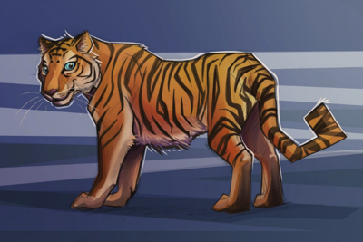
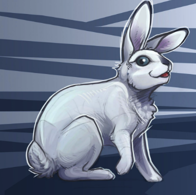
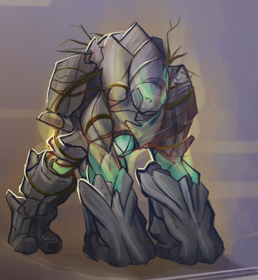
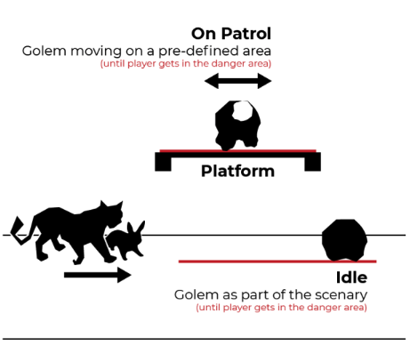
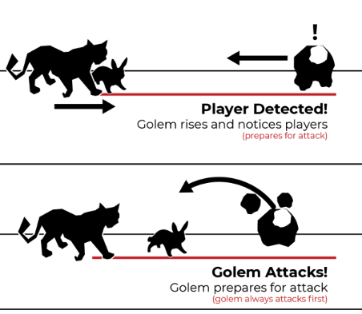
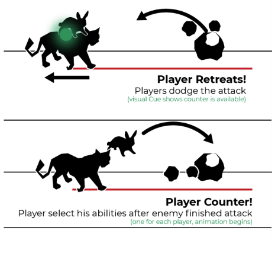
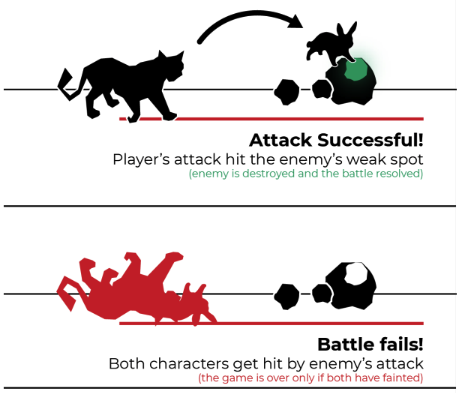

A cooperative 2.5D adventure about a rabbit and a tiger who have to trust each other to save the forest, without a single act of gratuitous violence.
David Smith (Game and UI/UX Designer) · Leonardo Yuji (3D Artist) · Otavio Colombini (3D Artist, story designer) · Victor Perrotte (Game Designer, Developer, General Artist)
A broad audience (10+) of casual players who enjoy indie games and level exploration with a touch of battle. People who want an immersive, story-driven game and are willing to uncover every piece of its world, and who like to alternate slower parts (exploration, dialogue) with exciting combat or fast segments such as runner moments.
Why this audience?
Our brief research (a sample of 17 answers) showed that players today lean strongly towards shooting, fighting and strategy games. We wanted to step away from that trend and offer something more sincere and captivating, with no gratuitous violence, while passing on values we feel are missing in the world.
Survey result for “Exploding, wrecking, crushing and destroying” (1 to 5, 17 responses): 9 answered 4 and 4 answered 5, with 1 answering 2 and 3 answering 3.
How do we reach them?
A distinctive art style. 2.5D graphics with painting-like textures and a “brushstroke” effect, saturated colours and intriguing characters. The aim is to attract younger players and anyone who enjoys exploring a universe as an artistic work.
An emotional, profound story that appeals to all ages and raises questions, values and learning, with new mechanics for exploration, puzzles and defensive combat that avoids direct conflict while staying exciting.
What is the market missing?
Games for children and teenagers rarely offer cooperative play with a deep storyline. Wild Saga teaches friendship, loyalty, trust and real collaboration between two very different characters, mixing thrilling action and mystery with quieter moments. It also challenges players with new cooperative mechanics, platforming, puzzles and combat, updating classic ideas in creative combinations.
Inspirations
Tomba · PS1
Super Mario Odyssey · Switch
Donkey Kong Country Returns / Tropical Freeze · Wii
Odin Sphere · PS2
Prinny 2 · PS2
Dark Cloud 2 · PS2
Breath of Fire IV · PSX
Project scope
Before committing to the full game, we adapted every key feature (map progression, puzzles, dialogue, cooperative mechanics and spline gameplay) into one streamlined demo scenario. It combines all mechanics for testing and adaptation and works as a tutorial that showcases the game.
Concept art of the demo scenario: a floating island with a mountain, forest, ruins and a waterfall. By Victor Perrotte.
World & story
World building
A world at roughly an 1850s level of technology, with only a few isolated city-states connected by train. Most of the game happens far from them: forests, plains, caves, ruins and valleys. The ruins of earlier civilisations, animal or human, are central to the narrative, and the goal is a mystical feeling in every environment, because supernatural forces drive the story.
Synopsis
Deep in a forest, something awakens dormant forces inside a ruin and causes an earthquake.
A circus train is shaken, and a wagon falls off a bridge into the forest. Inside the cage is a Tiger.
A nearby Rabbit finds the cage and, after reluctance and conflict, decides to help. A loose piece of the bridge falls and breaks the cage open before he can.
Lost and disoriented, the two must work together despite different goals: the Tiger wants to go home, the Rabbit wants to save his. The only way for both is to find what caused the earthquake.
Deeper in the forest they find “moving rocks” and an unknown ruin guarded by a giant stone golem, woken and distorted by an evil energy. It recognises the Rabbit’s lineage of protectors and asks the heroes to help the other elemental guardians break free.
Three acts
Act 1 · Coexisting
The Rabbit must cooperate with a predator to get home. The Tiger is somewhere unfamiliar and lost. Pilot scenes:
Scene 01. The Rabbit finds the cage and faces a moral dilemma: open it for a predator? As he reaches for the key, a stone falls and opens it. He insists he would have done it. The Tiger is never fully sure.
Scene 02. An obstacle only the Tiger can cross. The Rabbit refuses at first, then changes his mind and convinces him to go on together.
Scene 03. They meet a strange creature and avoid a fight.
Scene 04. Resting, they talk. The Tiger remembers circus life and wanting to go “home”. The Rabbit worries about his changing village.
Further scenes (draft). A quadrupedal golem grows after being defeated, and the Rabbit flees with the Tiger. The Tiger admits circus life wasn’t as good as he remembered. A Wolf jokes that the Tiger should eat the Rabbit, then asks for help finding food. A golem kidnaps an animal and they follow to rescue it.
Act 2 · Venturing out
They learn where the strange events come from, and that much of what the Rabbit knew has changed or been destroyed. The Rabbit sees his chance to prove his worth but knows he can’t do it alone. The Tiger, after tasting freedom, begins to rethink going back to the circus.
Act 3 · The fusion
After a gruelling fight with the last golem, the Tiger is knocked unconscious. The Rabbit fights on alone and wins, but the Artifact still shines and his friend is dying. He fuses his magic with the Tiger to save him. The Tiger rises and becomes a golem unlike the others, and the Rabbit must fight his best friend to free him.
Ending A: Rabbit wins. The Artifact shatters, the Tiger is cured, and together they return to the village, recognised for their friendship. The Rabbit becomes a humble guardian and they help it flourish.
Ending B: Fusion. The Rabbit fuses with the Tiger into an even larger golem and they harness the Artifact’s power as guardians of the region.
Characters
Main · Tiger
Born to perform
Raised in a circus, his life was performances and training, and his world was confined. He never knew freedom, so he feels safe in what he has and fears losing it. He dreams of joining bigger, more famous circuses.
His best memories are his first applause and playing with other animals. He hides suppressed memories of the suffering of other animals, including his mother. His greatest joy is making others happy, and he turns playful to avoid heavy emotions. Naive, easily bored, overreacting, and confident even when unsure.
Main · Rabbit
The underestimated observer
The youngest child of an important family in a village of many animal species. His job is to watch the surroundings and make sure all is safe. Creative and intelligent, yet always underestimated by his family. Responsible, idealistic and friendly, with a taste for solitude.
Lacking courage but loving to investigate the unknown and stay in control. He remembers playing in the woods fondly, but he has suffered while trying to prove himself, which shows up as perfectionism and insecurity.

The Tiger, concept art by Victor Perrotte.

The Rabbit, concept art by Victor Perrotte.
Bosses: the elemental Golems
One Golem per environment, each a distinct element. They are ancient guardians, created to keep natural balance and stop unrestrained destruction. The mysterious energy has woken them, weakened and corrupted, and the player’s task is to help them regain their sanity. The first is The Boulder, the Forest Golem: perhaps the eldest of the guardians, aware of the animals in its forest, grateful to the Rabbit’s family, and puzzled by the relaxed, circus-raised Tiger.

The Forest Golem, concept art by Victor Perrotte.Golem character sheet (“Golem 1B”): front, side and fist detail.
Enemies & other characters
Enemies: the golems’ minions, “extensions” that spread through each environment, plus dangerous animals such as wolves that lead to chases or quests ending in battle.
Rescued animals: animals from the Rabbit’s village hurt by the Artifact. They give quests whose rewards help rebuild the village.
Scenarios & levels
Environments
1 · Home, the Rabbit’s Hole
A forest where the “uncivilised” animals live, thought dangerous by the city, but really a place of freedom, benevolent magic, wide green fields and nature-covered ruins. When the Artifact’s energy shifts, the open fields become exposed hunting grounds, the dense woods turn nearly lightless, and the ruins radiate malevolence.
2 · Underground, the Unknown Darkness
Caves lit only by moonlight on aquatic caverns, narrow and airless, yet full of sound: dripping water, sonar from bats. Ruins resemble aqueducts and giant pipes. Here the Artifact brings light instead of darkness, with an intense glow held back only by a pile of rocks at the entrance.
Levels (Environment 1)
Part I · Open Fields. Starts at the fallen wagon after the first cutscene. A dialogue shows each character claiming they don’t need the other. Three puzzles teach switching characters, role reversal and a combined long jump, so the player learns that cooperating works better. Open fields and mountains give a sense of freedom, then darker areas and enemies appear towards the dense forest.
Part II · The Dense Forest. Dimmer and more enclosed, already affected by the Artifact, and longer than Part I. It introduces combat with at least three golems and more intricate puzzles, and ends at the ruin entrance.
Part III · The First Ruins. More geometric puzzles and structures, with enemies integrated into puzzles. Weathered, vine-covered temple architecture with a purple particle effect marking the Artifact’s influence. Ends with the boss fight against the Stone Golem.
Base. The Rabbit’s lost and destroyed village, which he swears to protect and rebuild. Map. Clear division of environments, showing the path of every level taken so far. The game is linear, with interconnected ruins.
Mechanics
Movement
2D platforming inside a 3D world: movement follows straight and curved paths, and a path-switching feature adds depth and exploration. It also removes “endless pits”: falling just means backtracking along a parallel path, and the same mechanic can surprise the player.
Co-op
The two characters are interdependent, a symbiotic pair. They fight together, solve puzzles with each other’s help, and overcome obstacles as a team. The relationship grows stronger through the game, matching the story, and players should feel the characters learning from one another. The interface also supports local two-player.
Dialogue system
Interaction
Short, quick exchanges from minimal interactions: a non-interactive object, a blocked path, an NPC with an open quest. Can overlap when several objects are nearby, never obstruct, time out, and often have no portrait.
Quest
Quest narratives with NPCs, shown with a character portrait that changes with emotion. They don’t block movement and are advanced or skipped with the action button.
Main story
The most complex: long exchanges, possibly with cutscene-style animation. They can’t be skipped outright, but a “skip story” option is available from the start/esc button.
Puzzles
One character always helps the other past an obstacle: a lever only the Rabbit can reach, a wall only the Tiger can break. Puzzles share a structure but are themed to each environment. Type 1: five floor buttons, three stones and a balance linked to a door. Stones and the characters’ own weight must even out the balance to open it.
Platforms
Themed to each level segment, for example field → dense forest → swamp → ruin entrance. Varied obstacles prevent fatigue, and colour palettes darken as the game progresses.
Combat system
Combat is defensive and cooperative, built around counter-attacks, not button-mashing.
1 · BeforeEnemy at rest (camouflaged) or patrolling
→
2 · StartPlayers enter its range; HUD swaps items for abilities
4 · ResolutionWin: enough weak-point hits · Lose: both unconscious

1 · Before the fight: the golem patrols a pre-defined area, or stays idle as part of the scenery, until the players enter the danger area.

2 · Player detected: the golem rises, notices the players and prepares to attack. The golem always attacks first.

3 · The players dodge the attack and a visual cue shows the counter is available. After the enemy finishes its attack, each player selects an ability and the animation begins.Alternative: the players escape. Leaving the area ends the battle and the golem goes back to its starting point.

4 · Resolution: if the counter hits the weak spot the enemy is destroyed and the battle is resolved. If both characters are hit, the battle fails, and the game is over only if both have fainted.
Counter-attack. After dodging, a visual cue opens a window to combine one ability from each character. Depending on the combination, it hits a different weak point (High, Mid or Low Frontal, Back, or combinations) and only deals damage if it matches the enemy’s weak point.
Getting hit. If a player is hit, no counter-attack happens. They fall unconscious until their partner rescues them in the next window. Suggestion: the weak point may shift during the fight.
Avoiding combat. Enemies have a maximum activation distance. Leave it and they stop chasing and go back.
Loadout. Up to four abilities per character, chosen from: Protection, Kick, Rush, Somersault, Pounce, Tackle, Tail Whip, Slide Kick, Throw, Grab, Head-butt, Bite, Scratch.
The ten counter-attacks
Counter-attack
Tiger
Rabbit
Target
What happens
Protection
Protection
Protection
Player
Prevents damage to either player.
High Kick
Throw
Kick
High frontal
The Tiger tosses the Rabbit upward and he kicks the enemy’s head mid-air.
Surprise Attack
Head-butt
Somersault
Back
The Rabbit leaps over the enemy to face it while the Tiger attacks from behind.
Grabite
Bite
Grab
Mid / Low frontal
The Rabbit jumps on the Golem’s head, blinding and stunning it, while the Tiger bites.
Pray Catcher
Pounce
Rush
High frontal / Back
The Rabbit runs between the enemy’s legs to distract it while the Tiger pounces.
Etch a Scratch
Grab
Scratch
Low / Mid frontal
The Tiger pins the enemy from behind while the Rabbit jumps high, scratching and kicking its front.
From Below
Tackle
Slide Kick
Low frontal / Back
The Tiger knocks the enemy backwards so it rolls, and the Rabbit kicks it from behind.
Wrecking Ball
Tail Whip
Grab
Mid frontal
The Rabbit holds the Tiger’s tail and spins into the enemy’s stomach.
Speed Is My Game
Rush
Rush
Player
Increases both players’ speed for a limited time.
Jousting
Rush
Slide Kick
High / Mid frontal
The Rabbit rides the Tiger with a branch as a lance while the Tiger charges.
Rabbit ↓ · Tiger →
Protection
Kick
Rush
Somersault
Pounce
Tackle
Tail Whip
Slide Kick
Throw
Grab
Headbutt
Bite
Scratch
Protection
1
Kick
2
Rush
9
5
Somersault
3
Pounce
Tackle
Tail Whip
Slide Kick
10
7
Throw
Grab
8
4
Headbutt
Bite
Scratch
6
Matrix of ability combinations: Rabbit abilities down the side (blue), Tiger abilities across the top (orange). The numbered green cells are the ten counter-attacks, numbered as in the table above. Hover or focus a number to see the counter-attack. Shaded rows and columns are shaded as in the original matrix.
Boss battles
Each environment’s boss reflects that environment’s theme, with abilities that define the counter-attack it allows. The Boulder (Environment 1):
Profile
Personality: calm, purposeful, strategic. Specialty: Unbreakable Defence, blocking 100% of damage for 3 seconds. Weak point: front / mid. Health: 3 hearts · Difficulty: 9¾
Abilities
Rising Pillars: a punch that raises earth pillars between boss and players. Ground Smash: a close-range cross punch buried in the ground. Flying Punch: it retreats to the background, throws a stone up and launches its fists at three locations.
Climb the raised pillars to reach it.
When a punch gets stuck in the ground, attack the crystal on its chest.
In the background it is invulnerable, but retrieving its fists takes time, creating an opening.
Journeys & base. After a boss falls, a character is unlocked and returns to the village, where the heroes rebuild houses. Villagers give quests (“Journeys”) that send players back to earlier levels to find objects and materials. Completing them pays in-game currency, also purchasable with real money, used to buy new abilities.
Exploration system
The game encourages exploring to connect scenery, story and characters, with rewards delivered through portals (areas unlocked by key items, puzzles, abilities or story) and spectacle (scenery that carries the narrative, cutscenes on entering places, breakable objects, and visual rewards after bosses and puzzles).
Interactive objects
All used with the action button: vases, weak walls and obstructions (break), crates and rocks (push), doors (unlock areas), levers (activate), vines (pull, cut, swing, grab), dirt mounds (dig), pressure plates (press).
Collectibles & tools
Recipe ingredients, butterflies, bowling pins (juggling), circus items, animal-shaped stone sculptures. Exploration objects: shimmering stones (key items), fireflies (form a lantern), Bun’n Boots™ (walk on thorns), fast-travel portals.
Unexpected interactions
Fragile ground that breaks, dry trees dropping branches, rolling stones, falling stalactites, cave flooding, animal traps (beehives, anthills, snares, nets), and a blinding flash that confuses the controls.
Scenery animation
Birds that take flight, grass reacting to steps and wind, ambient particles (leaves, spores, dust, droplets), and purple mist for anything enemy-related that turns bright yellow when the threat subsides.
Exploration abilities
Acquired linearly through puzzles, exploration and story. Each is introduced in a scene where the characters learn from one another.
Rabbit
The Great Leap · higher jump (hold jump). Learned fleeing an angry Tiger toward a cliff.
Into the Hole · dig to reach hidden areas. Learned trapping mini-golems in a hole.
Open Sesame · pull levers. Learned freeing the Tiger from a net trap.
Hidden Strength · push small objects. Learned freeing the Tiger from rubble.
Tiger
Dangerous Life · ledge grab. Learned almost falling off a cliff.
Oh Mama, I’m Strong · push large objects. Learned rescuing the Rabbit from a flooding cave.
Heeere’s Johnny · break weak walls with a dash.
Really, I’m on a Diet! · press pressure plates. Learned when a scuffle sinks a hidden plate.
UX system
Look & feel
A simple interface that deliberately contrasts with the painterly game world: a lesser-explored mythic theme in stone-like colours with modern touches. Typography is Josefin Sans for titles and Mukta for smaller text, both timeless. Buttons are standardised across menus and options.
Elements
Icons
Ability icons are silhouettes of the characters, coloured by who uses them (blue = Rabbit, orange = Tiger, green = both). There are icons for the 13 abilities, the 10 counter-attacks (with quick sketches of their effects), items, and the exploration abilities, which are linked by a visual path in the menu and appear as they unlock.
Portraits & dialogue
Two kinds of portraits: HUD portraits for the selected character and the status of the other (follow / stay / fainted), and dialogue portraits with emotions (happy, sad, confused, angry, scared). Dialogue boxes match the game’s style and read as a conversation between the characters.
Feedback
A clear response to every significant action (new ability, finished puzzle or quest, new area) to reinforce both intrinsic and extrinsic rewards.
Contextual HUD
The HUD shows abilities, silhouette portraits and items, and adapts to the moment: items during exploration, abilities in battle. It fades after 30 seconds without interaction. A used ability’s icon glows. In local multiplayer it mirrors to the right so both players see their own abilities and items.
Character swapping
Two portrait displays: one for the state of the non-controlled character (follow or stay), one for who is selected. A waiting character is shown sleeping, a moving one on all fours, and the selected character steps in front of the other and takes their place.
Menus
Abilities menu: abilities with their attributes and icons, the combinations they can form (count and, once found, names), connections to selected abilities, and exploration abilities.
Inventory: items as icons with tooltips. The action button selects and reveals usage options. Quest items carry a hint.
Quests / map: quests integrated with the map. Quest givers and turn-in points appear in the quest’s colour, fast-travel points and secret places show once discovered, and the triggers filter between All · Quests · Fast travel · Puzzles · Secret places. Paths and items are not shown.
Options and main menu: configuration, credits, save, load and exit.
Wireframes
Wireframes of the main screens, at 16:9. Click a screen to enlarge it. The working file is in Figma (link at the top of the page).
The game is split into systems, each overseeing one area, with the lowest coupling possible. Some systems inherit from parent classes.
1A global GameManager coordinates the systems. Each system oversees one area, with the lowest coupling possible, and some inherit from parent classes.
·Colours follow the original diagram. The calls between systems are not redrawn here.
Movement on a spline
Movement is a 2D physics system in Unity, but the world is 3D: the X axis corresponds to distance along a Bézier spline. Every frame the Vector3 position on the spline matching the 2D X position is calculated, so 3D objects have no colliders, and objects with colliders or rigid bodies have no visuals.
GenerateCollider runs at level start and builds a 2D polygon collider from raycasts along the curve, representing the walkable path.
Position Collider approximates an object’s position relative to the curve and its distance from the start, which becomes the 2D X value.
Every object moving in 2D is updated in 3D by the Projector script, using the same logic.
1At level start GenerateCollider casts rays along the curve of the 3D world and builds a 2D polygon collider: the walkable path.
2Position Collider approximates an object’s position relative to the curve; its distance from the start becomes the 2D X value the mechanics work with.
3Movement runs in 2D. MasterMove moves the actors, which have colliders and rigid bodies but no visuals.
4Every object that moves in 2D is updated in 3D by the Projector script, using the same logic.
5The 3D side has the visuals and animation: 3D objects have no colliders.
Post mortem
Semester 1 · learned
We focused on a movement system built on Unity’s foundations but with a unique twist. With no clear reference, it became trial and error that cost a lot of time. In hindsight, working within Unity’s capabilities and putting more energy into concept, narrative and visuals would have been simpler.
The low-poly 3D modelling, aiming for a 2D-animation look, helped from earlier semesters but needed deeper development.
Semester 2 · learned
Time estimates were too low. The game grew too complex for four people in a year, and the mistake was trying to build a complete game instead of a simpler one. Adjustment phases (merging scripts, refining a walk cycle) take far longer than first execution.
Learning new skills on the go, for example rigging and 3D animation, meant redoing assets. Trello made organisation easier than HacknPlan, but cards fit interdependent game elements awkwardly.
What we’d do differently
Semester 1: prioritise pre-production on the core essence, story and above all the visual concepts, so art direction anticipates every feature. Organise better with the available platforms and distribute tasks more evenly.
Semester 2: test the execution of key tasks earlier to get a realistic sense of time, and cut scope accordingly for a more concise, manageable plan.